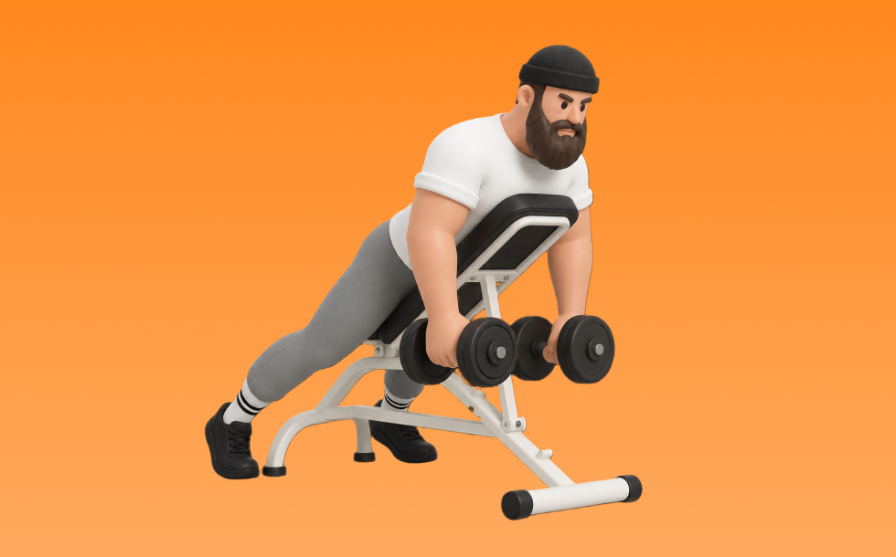

インクラインリアレイズ

インクラインリアレイズとは、ダンベルとインクラインベンチを使って「腕を後方へ開く」動作で肩後部（三角筋後部）と上背部を鍛える種目です。胸をベンチに預けることで反動を抑えやすいのが特徴で、肩甲骨を寄せすぎずに肘を横へ開き、ゆっくり戻す動作を繰り返します。肩後部の発達と姿勢改善が期待できます。
- 対象部位
- 肩
- 器具
- ダンベル
- 記録形式
- 重量・回数
- 別名
- インクラインリアデルトレイズ / incline rear raise / incline rear delt raise
YouTube動画
-
【初心者】リアレイズの正しいやり方 | 肩の後ろ側に効きまくる【ビーレジェンド プロテイン】
-
【効かせにくい種目No.1】肩の後ろ/リアレイズを寺島遼が徹底解説！【永久保存版】
-
【筋トレ悪いフォーム解説】リアレイズが効いているかわからない方へ向けたコツを伝授！
-
【肩トレ】ダンベルでハリのある肩を作る！最も効果的な筋トレメニュー5選|サイド・フロント・リア
-
三角筋後部を大きくしたいなら、実はあの種目が効果的です【筋トレ】
-
【丸くてデカい肩を作る】プロボディビルダーが教える最強肩トレ3種目！
-
【保存版】リアレイズについて、トレーニング科学系大学研究者がわかりやすく解説。肩全体の丸みを形成するための必須種目、リアレイズの重要性とやり方につい完全解説してみました。
-
低重量でメロン肩を作るリアレイズを徹底解説！しっかり肩に効かせる嶋田慶太式トレーニング説明！（後編）
-
【ダンベルで行う】肩が苦手な人がやるべき種目3選をわかりやすく解説します
-
【肩トレ】肩だけに効かせるやり方を全てまとめた筋トレ動画
-
肩を徹底的に大きくできる！インクラインサイドレイズをしっかり効かせる方法【肩トレ】
-
肩トレで最も重要なのは〇〇でした
-
逆三角形の体はこれで作れ！リアレイズ極意解説！
-
【リアレイズ】三角筋後部に効くコツをダンベル・ケーブル・インクラインなど種類別に！
-
肩全体に効きまくる！7分間ダンベルトレーニング
YouTubeショート
-
みなさんはリアレイズやってますか？持田選手（おかずもち）がしっかり三角筋後部に効くトレーニングをレクチャーしてくれました！#筋トレ #volix #肩トレ #ちょこっと惜しい #三角筋
-
みなさんはリアレイズどのようにされてますか？？今回は持田選手がリアレイズを伝授！次はどの種目の解説をやってほしいかコメントしてね！ #トレーニング #筋トレ #volix #ちょこっと惜しい
-
リアレイズの基本動作 #shorts #持田式 #筋トレ
-
肩トレのやり方🔥〜インクラインサイドレイズ基礎編〜 #筋トレ #筋肉 #筋肉社長 #マッチョ #肩トレ
-
絶対にリアに入るリアレイズのやり方#筋トレ初心者 #肩トレ#ジム
-
【初心者さん注意】リアレイズで三角筋が効かない間違ったフォーム！ #筋トレ
-
ダンベルで丸い肩を！リアレイズ~意識ポイント~
-
正しいショルダープレス4つのポイント #筋トレ
-
【肩トレ】ダンベルリアレイズで僕が意識したこと #肩トレ #筋トレ#フィットネス#ボディビル
-
肩トレこの3種類で十分やと思うねんけど、マッチョ警察の方々どう思う？
-
【ライイングリアレイズ解説】#shorts
-
正しいサイドレイズ4つのポイント #筋トレ
-
【よくある間違いライイングリアレイズ】 #ダイエット #筋トレ #新座市 #志木市 #ライイングリアレイズ
-
リアレイズの正解フォーム、教えます！ #リアレイズ #肩トレ #三角筋後部 #筋トレ初心者 #筋トレフォーム #AI筋トレ研究所 #Shorts
-
カネキンが認める嶋田慶太の肩
-
めっちゃ肩がデカくなった今やってるメニュー！#shorts
-
リアレイズ（Rear Raise）の基本フォームとやり方
-
みなさんはインクラインサイドレイズやってますか？持田選手がしっかり三角筋の横に効くトレーニングをレクチャーしてくれました！#筋トレ #volix #肩トレ #ちょこっと惜しい #三角筋
-
筋トレ初心者がやるべき！肩トレ3選！#shorts
-
【筋トレ】ライイングリアレイズの解説
-
サイドレイズはここを気をつけると全然肩が変わる！ #サイドレイズ #筋トレ #トレーニング
-
個人的に最も効果のある三角筋の種目3選を紹介 #筋トレ #フィットネス
-
〔筋トレ〕ダンベルロウ(インクラインベンチver)#筋トレ #ダイエット #減量 #背中
-
正しいダンベルロウ4つのポイント #筋トレ
-
今日の肩トレ！#筋トレ大学生 #筋トレ男子 #gymmotivation #fitnessmotivation
-
個人的に最も効果のある背中の種目3つを紹介 #筋トレ #フィットネス
動作方法
- 体幹を安定させ、背中が丸まらない姿勢を作る
- 肘を後方へ引き、肩甲骨を寄せる
- 勢いを使わず、ゆっくり戻す
動作ポイント
- 背中を丸めない
- 首に力を入れすぎない
- 戻しを速くしすぎない
ワンポイントアドバイス
- 重量よりも肩の軌道を安定させる
- 首まわりの力みを減らして行う
目的別回数設定
目的や体力に応じた一般的な目安です。無理のない範囲で調整してください。
- 筋力アップ
- 1〜5回
- 筋肥大
- 6〜12回
- 持久力アップ
- 13〜20回
YouTube動画について
動画はYouTubeの公開情報をもとに表示しています。内容は投稿者によるもので、Biggrによる監修ではありません。
アプリを入手
筋トレやトレーニングの記録はBiggrにお任せください。今すぐ無料で使い始められます。